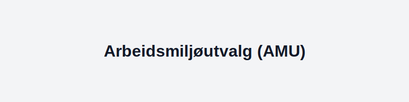
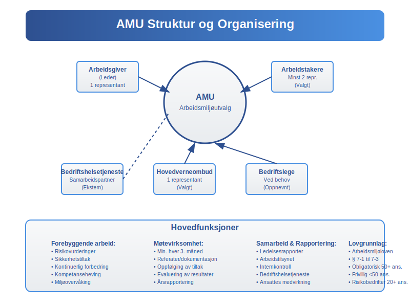
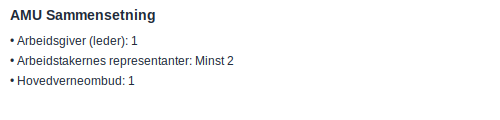
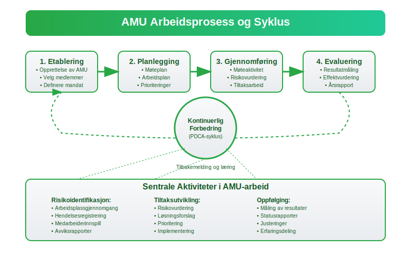

AMU (Arbeidsmiljøutvalg) er et obligatorisk samarbeidsorgan i virksomheter for å sikre et trygt og forsvarlig arbeidsmiljø i henhold til arbeidsmiljøloven. Formålet med AMU er å fremme samarbeid mellom arbeidsgiver og arbeidstakere om HMS (Helse, Miljø og Sikkerhet).

Innen internkontroll av arbeidsmiljø er AMU et sentralt verktøy. Les mer om internkontroll.
Bedriftshelsetjeneste er også en viktig partner for AMU, og bidrar med helseundersøkelser og risikovurderinger. Se Bedriftshelsetjeneste.
1. Lovgrunnlag og Formål
Arbeidsmiljøutvalg (AMU) er regulert i § 7-1–7-3 i arbeidsmiljøloven. Hensikten er å:
- Systematisk forebygge arbeidsrelaterte skader og sykdommer
- Legge til rette for et fullt forsvarlig arbeidsmiljø
- Sikre at arbeidsgiver og arbeidstaker samarbeider om HMS-arbeidet
- Fremme medvirkning i planlegging og gjennomføring av HMS-tiltak
- Bidra til kontinuerlig forbedring av arbeidsmiljøet
Juridisk Grunnlag
AMU er forankret i arbeidsmiljøloven kapittel 7, og er et lovpålagt organ som skal sikre at virksomheter oppfyller sine forpliktelser til å:
- Gi ansatte medbestemmelse i HMS-arbeidet
- Etablere systematisk og kontinuerlig HMS-arbeid
- Sikre at alle parter har tilgang til nødvendig informasjon om arbeidsmiljøet
2. Krav til Opprettelse
| Antall ansatte | AMU obligatorisk? | Kommentarer |
|---|---|---|
| 50+ | Ja | Virksomheter med mer enn 50 ansatte skal opprette AMU |
| 20–49 | Ja, hvis risikofylt | Dersom arbeidsmiljøet medfører særlig risiko |
| Under 20 | Nei, men kan opprettes frivillig | Mindre virksomheter kan dra nytte av AMU-struktur |
Særlige Forhold
Virksomheter med særlig risiko omfatter (se også Hva er et aksjeselskap?):
- Bygge- og anleggsvirksomhet
- Industrivirksomhet med kjemiske prosesser
- Virksomheter med høy skadefrekvens
- Offshore og maritime virksomheter
3. Sammensetning av AMU


| Rolle | Antall representanter | Valg/Utnevning |
|---|---|---|
| Arbeidsgiver (leder) | 1 | Utnevnt av arbeidsgiver |
| Arbeidstakernes representanter | Minst 2 (etter avtale) | Valgt av og blant ansatte |
| Hovedverneombud | 1 | Valgt av verneombud |
| Bedriftslege | 1 (ved behov) | Oppnevnt av bedriftshelsetjeneste |
Kompetansekrav
AMU-medlemmer bør ha:
- Kunnskap om virksomhetens arbeidsprosesser
- Forståelse av HMS-lovgivning
- Evne til å identifisere og vurdere risiko
- Kommunikasjonsferdigheter
4. Møter og Dokumentasjon
Møtefrekvens
- AMU skal som hovedregel holde møter minst hver tredje måned
- Ekstraordinære møter kan innkalles ved behov
- Møter skal holdes oftere ved endringer i arbeidsmiljøet
- Alle møter skal dokumenteres med referat
Dokumentasjonskrav
Referater fra møter skal inneholde:
- Dato, tid og deltakere
- Saker behandlet og vedtak fattet
- Oppfølgingstiltak og ansvarlige
- Frister for gjennomføring
- Evaluering av tidligere tiltak
Tilgjengelighet
Referater skal:
- Gjøres tilgjengelige for alle ansatte
- Arkiveres i henhold til dokumentasjonskrav
- Være tilgjengelige for Arbeidstilsynet ved inspeksjon
5. AMU og Internkontroll
AMU er en nøkkelkomponent i virksomhetens internkontroll-system for HMS. For en full oversikt over internkontroll og regnskapsrelaterte aspekter, se Hva er internkontroll?.
Internkontrollsystem
AMU bidrar til internkontroll ved å:
- Overvåke implementering av HMS-tiltak
- Vurdere effektiviteten av sikkerhetstiltak
- Sikre kontinuerlig forbedring
- Rapportere til ledelsen om HMS-status
6. Økonomiske Aspekter av AMU
Kostnader
Kostnadene ved AMU-drift inkluderer:
- Lønn til medlemmer under møter
- Opplæring og kompetanseheving
- Møtelokaler og utstyr
- Dokumentasjon og rapportering
Kostnadsføring
AMU-relaterte kostnader føres typisk som:
- Driftskostnader - løpende drift av AMU
- Personalkostnader - lønn under møter
- Opplæringskostnader - kurs og kompetanseheving
Se også Hva er personalkostnad?
Investeringer i HMS
AMU kan anbefale investeringer i:
- Sikkerhetsutstyr og verneombud
- Teknologiske løsninger for HMS
- Opplæring og kompetanseheving
- Miljøforbedringer
- Velferdstiltak for ansatte
7. AMU og Verneombud
Verneombud er sentrale i AMU-arbeidet og har følgende roller:
- Representere arbeidstakernes interesser
- Overvåke arbeidsmiljøet daglig
- Rapportere HMS-avvik til AMU
- Bidra til risikovurderinger
Samarbeid med Bedriftshelsetjeneste
AMU samarbeider tett med bedriftshelsetjenesten om:
- Helseundersøkelser av ansatte
- Kartlegging av eksponering
- Risikovurderinger
- Forebyggende tiltak
8. Rapportering og Oppfølging
Årsrapport
AMU skal utarbeide en årsrapport som inneholder:
- Oversikt over HMS-aktiviteter
- Statistikk over skader og sykefravær
- Gjennomførte tiltak og resultater
- Planer for kommende periode
Integrering med Regnskap
AMU-rapporter kan integreres med:
- Årsoppgjør - HMS-notater
- Bærekraftsrapportering
- ESG-rapportering
9. Digitalisering av AMU-arbeid
Digitale Verktøy
Moderne AMU-arbeid kan dra nytte av:
- Digitale møteplattformer
- HMS-systemer og databaser
- Rapporteringsverktøy
- Mobil-applikasjoner for registrering
Integrering med ERP-systemer
AMU-data kan integreres med ERP-systemer for:
- Automatisert rapportering
- Kostnadsoppfølging
- Trendanalyser
- Benchmarking
10. Utfordringer og Løsninger
Vanlige Utfordringer
- Lav deltakelse på møter
- Manglende oppfølging av tiltak
- Utilstrekkelig kompetanse
- Dårlig kommunikasjon
Suksessfaktorer
- Tydelig ledelsesforankring
- Regelmessig opplæring
- Systematisk oppfølging
- Åpen kommunikasjon
11. Arbeidstilsynets Rolle
Arbeidstilsynet kan:
- Kontrollere at AMU er opprettet og fungerer
- Kreve innsyn i møtereferater
- Pålegge tiltak ved mangler
- Gi veiledning om AMU-arbeid
Sanksjoner
Manglende opprettelse av AMU kan medføre:
- Pålegg om retting
- Tvangsmulkt
- Stenging av virksomhet
- Straffereaksjon
12. Internasjonale Standarder
AMU-arbeid bør ta hensyn til:
- ISO 45001 - Arbeidsmiljøledelse
- ILO-konvensjoner
- EU-direktiver om arbeidsmiljø
- Beste praksis fra andre land
13. Fremtidige Utviklingstrender
Teknologiske Innovasjoner
- Kunstig intelligens i risikovurdering
- IoT-sensorer for miljøovervåking
- Virtuell virkelighet i opplæring
- Blockchain for sporbarhet
Regulatoriske Endringer
- Skjerpede krav til dokumentasjon
- Økt fokus på psykososialt arbeidsmiljø
- Integrasjon med bærekraftsrapportering
- Digitalisering av rapporteringskrav
14. Praktiske Råd for AMU-arbeid

Etablering av AMU
- Kartlegg lovkrav og behov
- Velg/utnevn medlemmer
- Etabler møterutiner
- Opprett dokumentasjonssystem
- Sikre nødvendig kompetanse
Effektiv Møteledelse
- Forbered møter grundig
- Følg opp tidligere vedtak
- Involver alle medlemmer
- Dokumenter beslutninger
- Kommuniser resultater
Kvalitetssikring
- Evaluer AMU-arbeidet årlig
- Innhent tilbakemeldinger fra ansatte
- Benchmarking mot andre virksomheter
- Kontinuerlig forbedring
15. Konklusjon
AMU er et viktig verktøy for å sikre et trygt og forsvarlig arbeidsmiljø i norske virksomheter. Gjennom systematisk samarbeid mellom arbeidsgiver og arbeidstakere kan AMU bidra til å forebygge arbeidsrelaterte skader og sykdommer, samtidig som det styrker virksomhetens internkontroll og HMS-arbeid.
For å få maksimal nytte av AMU-arbeidet er det viktig med:
- Tydelig ledelsesforankring
- Kompetente medlemmer
- Systematisk oppfølging
- God dokumentasjon
- Kontinuerlig forbedring
Virksomheter som investerer i et aktivt og velfungerende AMU vil oppleve bedre arbeidsmiljø, færre skader og sykdommer, og styrket konkurranseevne gjennom reduserte kostnader og økt produktivitet. Dette påvirker også arbeidskapital positivt gjennom reduserte kostnader og økt effektivitet.